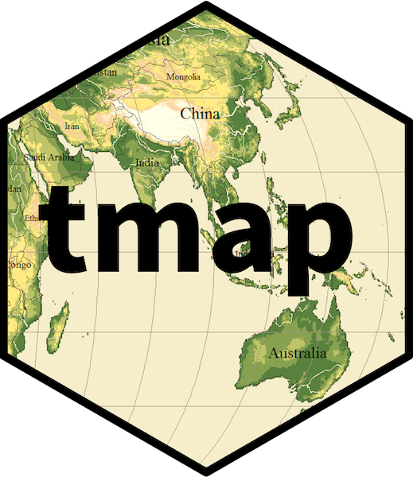
library(tmap)
tm_shape(World) +
tm_polygons(fill = "HPI") +
tm_shape(metro) +
tm_bubbles(size = "pop2020",
fill = "gold") +
tm_crs("auto") +
tm_title("Happy Planet Index")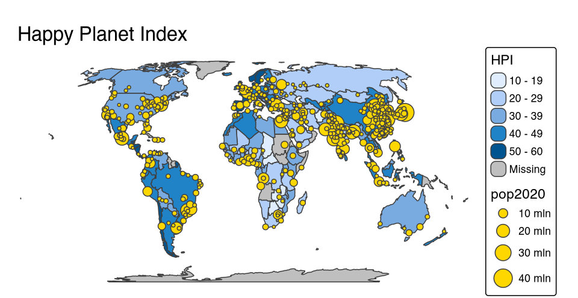
One or more tm_shape() groups, each followed by its layers, plus components and layout. qtm(World, fill = "HPI") quick thematic map.
tm_shape(shp, bbox, crs, is.main, ...)
shp: the spatial data object (see below)bbox: map extent, e.g. "Europe"crs: projection, e.g. "+proj=robin" (whole map: tm_crs())is.main: main shape (sets extent and projection)?Supported shp objects:
Example data: World, World_rivers, metro, land, NLD_prov, NLD_muni, NLD_dist
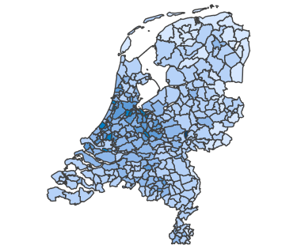
(fill = "income_high")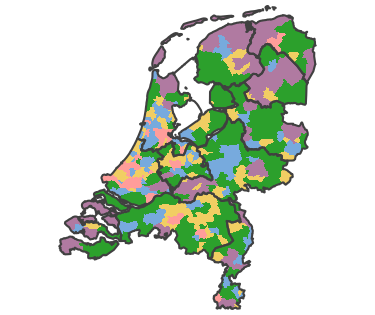
(fill = "urbanity")(lwd = 1.5)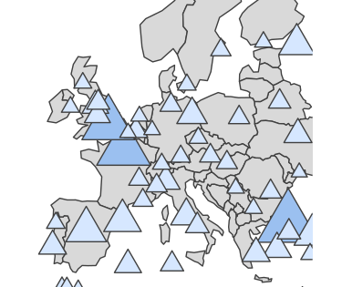
(size = "pop2020", fill = "pop2020", shape = 24)tmap_show_values("shape")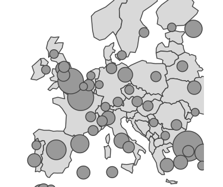
(size = "pop2020")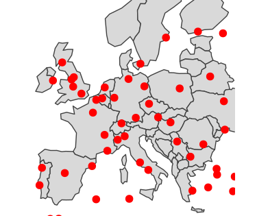
(fill = "red")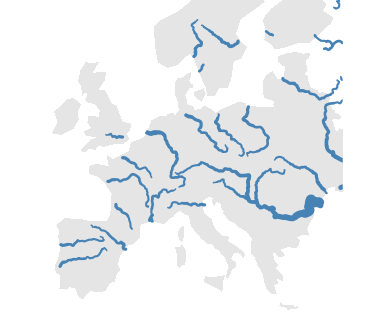
(col = "steelblue", lwd = "strokelwd")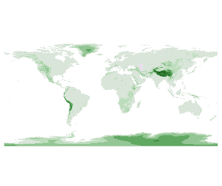
("elevation")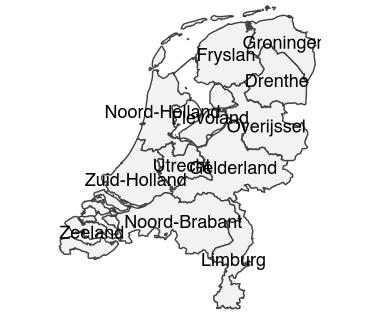
("name", size = 0.8)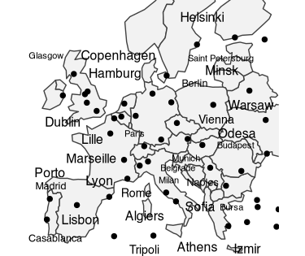
("name")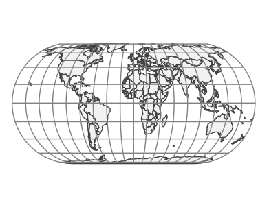
()tm_basemap("Esri.WorldTopoMap") tiles under the map
tm_tiles(...) tiles on top of the map
tmap_providers() lists the providers.
tm_polygons(..., group = "Countries") layers with the same group are switched on and off together.
"plot" static maps (default)"view" interactive maps with leaflet"maplibre", "mapbox" interactive maps with tmap.mapgltmap_mode("view") set the mode
ttm() toggle between the last two modes
rtm() rotate through all modes
Each layer has map variables: visual properties that are either constant or mapped from a data variable.
tm_polygons(fill = "red") # constant
tm_polygons(fill = "HPI") # data| layer | map variables |
|---|---|
tm_polygons | fill, col, lwd, lty, fill_alpha, col_alpha, pattern |
tm_symbols | fill, col, size, shape, lwd, lty, fill_alpha, col_alpha |
tm_lines | col, lwd, lty, col_alpha |
tm_raster | col, col_alpha |
tm_text | text, size, col, fontface, bgcol |
Each map variable x has four related arguments:
x.scale | how data values map to visual values, e.g. tm_scale_intervals() |
x.legend | the legend: tm_legend() |
x.chart | a chart: tm_chart_histogram() |
x.free | separate scales per facet? |
tm_polygons(
fill = "HPI",
fill.scale = tm_scale_intervals(
values = "brewer.rd_yl_gn"),
fill.legend = tm_legend(
title = "Happy Planet Index"),
fill.chart = tm_chart_histogram())tm_polygons(fill = "HPI",
hover = "name",
popup = tm_popup(
vars = c("HPI", "life_exp")))The .scale argument determines how data values are mapped to visual values: colors, sizes, shapes, etc.
() categories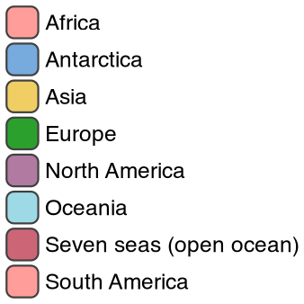
() ordered categories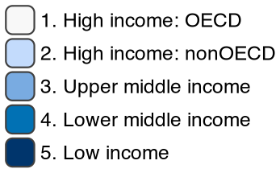
(style = "jenks") classes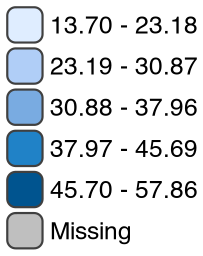
(style = "sd") deviation from the mean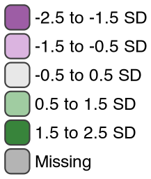
() continuous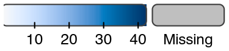
() also _log, _sqrt, _pseudo_log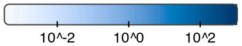
Also: tm_scale_rank(), tm_scale_discrete(), tm_scale_bivariate(), tm_scale_asis(), tm_scale_rgb().
style of tm_scale_intervals(): "pretty", "quantile", "equal", "jenks", "fisher", "sd", "fixed" (with breaks), …
m = tm_shape(World) +
tm_polygons("HPI")
tmap_save(m, "map.png")
tmap_save(m, "map.html")
tmap_animation(m2, "map.gif")tmap_leaflet(m) leaflet widget, tmap_grob(m) grob
renderTmap() & tmapOutput() for shiny apps.
fill.legend = tm_legend(
title = "HPI",
orientation = "landscape",
position = tm_pos_out(
"center", "bottom"))tm_legend_hide() no legend
tm_add_legend() a manual legend
One legend for two map variables:
tm_bubbles(size = "pop2020",
fill = "pop2020",
size.legend =
tm_legend_combine("fill"))A chart shows the distribution of a map variable:
fill.chart = tm_chart_bar()Also tm_chart_histogram(), tm_chart_donut(), tm_chart_violin(), tm_chart_box(), tm_chart_heatmap()
The values argument of a scale sets the visual values, e.g. a color palette:
tm_scale_continuous(
values = "viridis")
tm_scale_intervals(
values = "-brewer.rd_bu")
tm_scale_categorical(
values = c("red", "blue", "gold"))A - prefix reverses a palette. Palettes come from cols4all: explore them at cols4all.org.
midpoint sets the middle of a diverging palette. Other options: n, labels, value.na, label.na, values.range.
tmap_show_values() shows the values of symbol shapes, line types, and fill patterns.
Legends, charts and components have a position argument.
tm_pos_out(cell.h, cell.v)position = tm_pos_out("right", "center")tm_pos_in(pos.h, pos.v)position = tm_pos_in("left", "top")
position = c("left", "top") # shortUppercase ("LEFT", "TOP"): tight against the frame. Components at the same position are stacked.
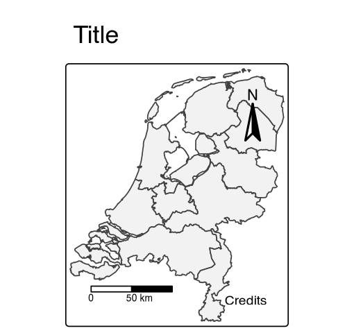
("Title")()()("Credits")tm_logo(), tm_inset() (a map within a map), tm_minimap() and tm_mouse_coordinates() (view mode)
tmap.mapgl MapLibre and Mapbox modes
tmap.glyphs glyphs, e.g. donut charts per feature
tmap.cartogram cartograms
tmap.networks network data
tmap.sources remote and tiled data sources, e.g. PMTiles
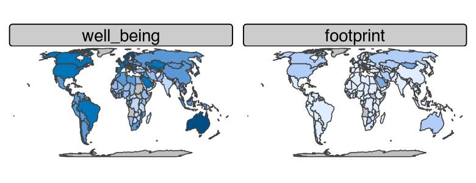
tm_polygons(
fill = c("well_being", "footprint"))One facet per variable, or split by a variable:
tm_facets_wrap(by = "continent", ncol = 3)
tm_facets_grid(rows = , columns = )
tm_facets_stack() facets in a row or column
tm_facets_pagewise() one facet per page
tm_animate(frames = "continent") one frame per category
fill.free = TRUE gives each facet its own scale and legend.
tmap_arrange(m1, m2) separate maps side by side
tm_layout(frame = FALSE, inner.margins = c(0.02, 0.1, 0.02, 0.1)) layout of one map
tm_crs("auto") projection for the whole map
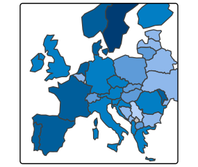
white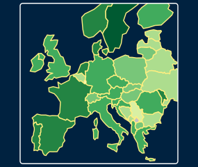
cobalt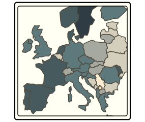
classic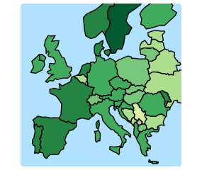
naturaltm_style("cobalt") style of one map
tmap_style("classic") style of all maps
tmap_style_catalogue() previews of all styles
tmap_options(...) global options; tmap_options_reset()